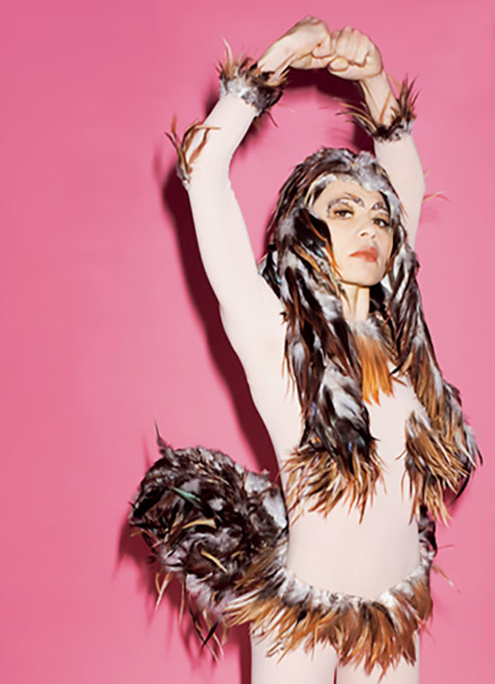

Hun interviewer sin egen mormor med skjult kamera. Hun rapper om at blive forladt af sin kæreste til fordel for en mulatpige. Hun stiller sin familie op på 720 forskellige måder og fotograferer dem. Hun klæder sig ud som en hane og som Marlene Dietrich. Fra Toronto til Torino spærrer de pæne museumsgæster øjnene op. Hvad sker der? Der sker det, at dansk kunst er ved at blive sjov – ikke mindst takket være 35-årige Lillibeth Cuenca Rasmussen
